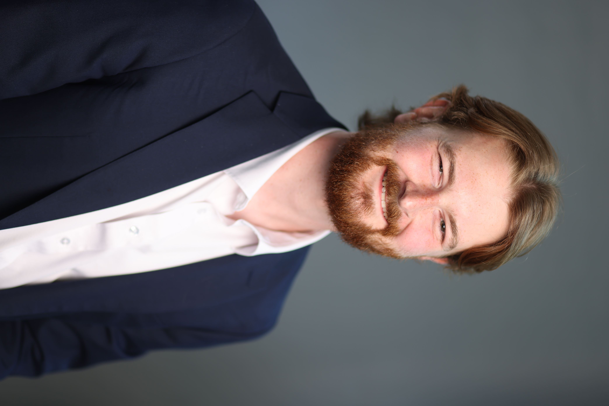

Ph.D. Candidate, Department of Mathematics, Purdue University

I am a Ph.D. candidate in the Department of Mathematics at Purdue University, specializing in Computational Science. My research lies at the intersection of applied mathematics and scientific software engineering, focusing on computational imaging, inverse problems, and statistical modeling. I work in the Integrated Imaging Lab under the guidance of Profs. Greg Buzzard and Charlie Bouman.
My core expertise is in synthetic data generation. Currently, I collaborate with the Air Force Research Laboratory (AFRL) and Air Force Institute of Technology (AFIT) to advance airborne imaging systems. I develop algorithms to simulate the complex optical distortions caused by high-speed air turbulence. By combining physics-based models with modern machine learning, I build validated synthetic data pipelines that serve as a "virtual testbed." This allows engineers to evaluate and refine Adaptive Optics (AO) correction systems computationally, avoiding the prohibitive costs and risks of real-world flight testing.
As Vice President of the Purdue SIAM Student Chapter, I lead the planning of social events to foster a collaborative student community. I also coordinate logistics for the annual SIAM Student Chapter Conference, providing a platform for research dissemination and professional networking (see the 2025 Conference).
Additionally, I co-organize the weekly Purdue SCAM/CCAM Lunch Seminar, where I facilitate technical exchange among graduate students and postdocs in computational science by recruiting speakers and managing seminar operations.
I am originally from Nashville, Tennessee and went to The University of Tennessee, Knoxville for my undergraduate degree in math. In Knoxville, I really enjoyed the outdoors in the nearby Smoky Mountains and made great use of the many
campsites and hiking trails. My favorite mountain was Mount Le
Conte, hosting the beautiful Alum Cave and Rainbow Falls trails.
In early August 2022, I moved to Lafayette, Indiana to start my graduate studies at Purdue! Although the topography of Indiana is a
bit different from East Tennessee, there are several great nearby trails such as the
Wabash Heritage Trail, the trails
at Prophetstown State Park, and
Turkey Run State Park.
In addition to the regional outdoor activities, one of my favorite activities is attending live music events. Since Lafayette is in
relatively close proximity to Indianapolis and Chicago, there are plenty of opportunities to see great artists coming through those
cities. My favorite touring acts blend multiple genres, including blues, rock, jazz, funk, bluegrass, and country.